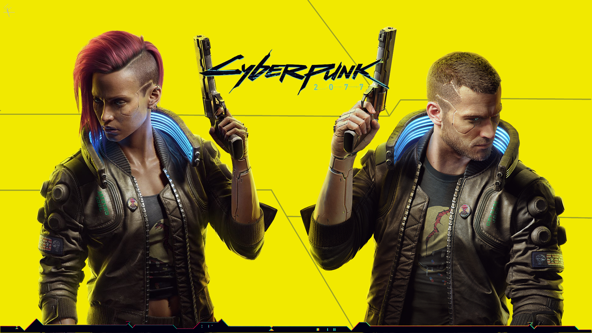

Cyberpunk 2077
An open-world role-playing game set in Night City, a neon-lit megacity where technology and power collide.

What it is
You play as V, a mercenary chasing a one-of-a-kind implant that holds the digital ghost of a rock-star terrorist. Your choices in dialogue and missions shape the story, and you can fight with guns, blades, hacking or stealth.
Why it belongs here
- Night City is one of the most detailed game worlds ever built.
- Its launch was rough, but years of updates, including the 2.0 patch and the Phantom Liberty expansion, turned it into a celebrated comeback story.
- Strong writing, memorable characters and a great soundtrack.
- Many ways to build your character and play your own way.